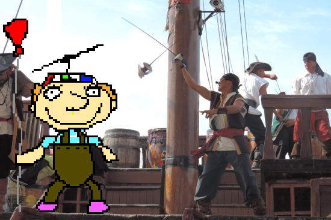

.

.
the 6 pirates take the first move and charge towards lil Tim. as they do, tim rips out a splinter from the ship's wooden hull. when the pirates get to stabbing range of tim, he pops his balloon! inside of his balloon was not helium, but mustart gas! the 6 pirates all jump back from the popping of the balloon but realize how their lungs don't feel so good, but their reslove is not broken! the first pirate runs head first into tim, tim performs a suplex manuver and knocks him out with his momentum knocking the pirate off the boat. the second pirate leaps towards tim, sword first. tim dodges the sword as it thrusts and wedges itself into the hull of the ship. getting stuck, confusing the pirate, tim then pushes him over the edge of the boat in this moment. the third pirate pulls out a flintlock pistol and aims it at tim. Tim quickly takes the sword out of the boat and uses it to deflect the bullet straight back to the pirate. the fourth pirate was standing behind the third pirate and the bullet piercing his head also hit the fourth, the fourth pirate's body fell onto a convenientlyl placed rake which the fifth pirate was standing on. launching him into the stratosphere. the last pirate died of scurvy. Now tim has full control of the boat. should he ditch the boat and take the treasure, or should he sail off into the distance?
sail away